The previous sections have identified all of the modes of an IEEE 1284-capable interface. Peripherals are not required to implement all of the modes. This being the case, a method is needed for a host platform to determine what the capabilities of the attached peripheral are, and to have a controlled method by which to set the interface into one of the modes.
The concept of negotiation was developed to fill this need. Negotiation is a sequence of events on the parallel port interface that would not effect an older "legacy" device but would provide identification of a 1284 peripheral. The concept is that an older device will not respond to the negotiation sequence and therefore the host would remain in a compatible mode state, while a 1284 peripheral would respond to the sequence and could then be set to any of the peripheral and host supported modes.
During the negotiation phase, the host places a request on the data lines and then initiates the negotiation sequence. The request can be to put the interface into a particular mode, or request a device ID from the peripheral. Device ID will be discussed later. Figure 8 shows the basic Negotiation sequence.
The Extensibility byte is used during negotiation to request that the peripheral enter a specific transfer mode, or to request that the peripheral send a device ID that will allow the host to identify the type of attached peripheral. The device ID can be returned in any reverse channel mode, other than EPP. Table 1 describes the extensibility byte and allowable values. The XFlag is used by the peripheral for acknowledgment that the requested mode is available. The XFlag will always be set to one (#6 in figure 8) as a positive acknowledgment for all requests except for Nibble mode reverse channel. All 1284-compliant devices are required to support Nibble mode for reverse channel operation. The Extensibility Link request bit is used to provide a mechanism for future expansion and addition of new operational modes and features.
Negotiation and device ID are key features for the future ability of PC platforms to determine system configuration and to include parallel port attached peripherals in this determination.
Table 1 -- Extensibility Byte Bit Values| Bit | Description | Valid
Bit Values (8765 4321) |
||||||||
|---|---|---|---|---|---|---|---|---|---|---|
| 8 | Request Extensibility Link | 1000 0000 | ||||||||
| 7 | Request EPP Mode | 0100 0000 | ||||||||
| 6 | Request ECP Mode with RLE | 0011 0000 | ||||||||
| 5 | Request ECP Mode without RLE | 0001 0000 | ||||||||
| 4 | Reserved | 0000 1000 | ||||||||
| 3 | Request Device ID | Return
data using mode:
|
||||||||
| 2 | Reserved | 0000 0010 | ||||||||
| 1 | Byte Mode | 0000 0001 | ||||||||
| none | Nibble Mode | 0000 0000 |

1284 Negotiation phases transitions: